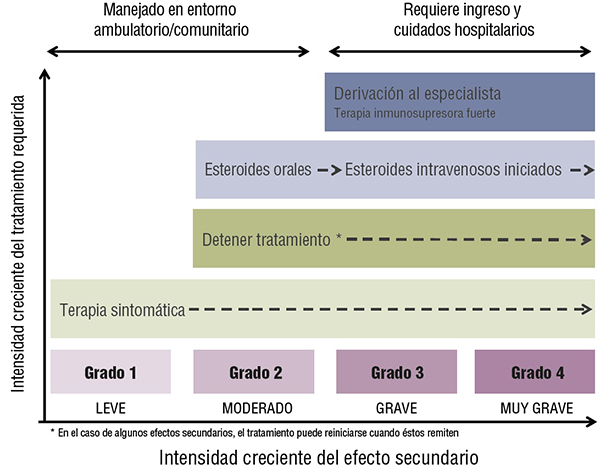

ICO 24h
MÓDULO 5 : Urgencias relacionadas con la inmunoterapia oncológica
| severidad | características | |
| 1 | leve | Asintomática o síntomas leves Observación clínica o de diagnóstico básico Intervención no indicada |
|---|---|---|
| 2 | moderado | Limitación de actividades instrumentales de la vida diaria Intervención mínima, local o no invasiva |
| 3 | grave | Médicamente significativa, pero no inmediatamente peligrosa para la vida Incapacitante, limitación del autocuidado Hospitalización o prolongación de hospitalización indicada |
| 4 | severa | Consecuencias potencialmente mortales Intervención urgente indicada |
| 5 | letal | Muerte relacionada con el efecto adverso |
- Manejo. Recomendaciones generales :
| grado | recomendaciones generales |
| 1 | Tratamiento de soporte Aumento de la vigilancia de los síntomas Descartar infección Educación del paciente |
| 2 | Medidas de grado 1 y además: Interrumpir la inmunoterapia hasta que la toxicidad se haya resuelto o mejore a grado 1 o menos Considerar el tratamiento con esteroides por vía oral si los síntomas persisten > 5 días (prednisona 1mg/kg/día) |
| 3 | Tratamiento de soporte Iniciar esteroides por vía intravenosa (metilprednisolona dosis estándar 1-2 mg/kg/día) Si no se resuelve en 48 horas, considerar la adición de otro inmunosupresor (infliximab, micofenolato) Valorar pruebas complementarias dirigidas al órgano afecto Solicitar la opinión de los especialistas Diagnosticar y tratar la infección Interrumpir la inmunoterapia hasta que la toxicidad se haya resuelto o mejore a grado 1 o menos Los esteroides deberán de ser disminuidos lentamente, durante 3-6 semanas |
| 4 | Medidas de grado 3 e interrumpir definitivamente la inmunoterapia |
